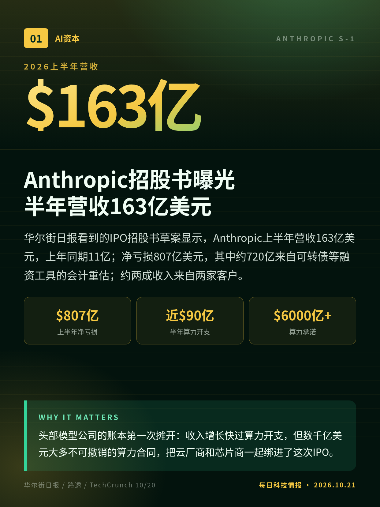
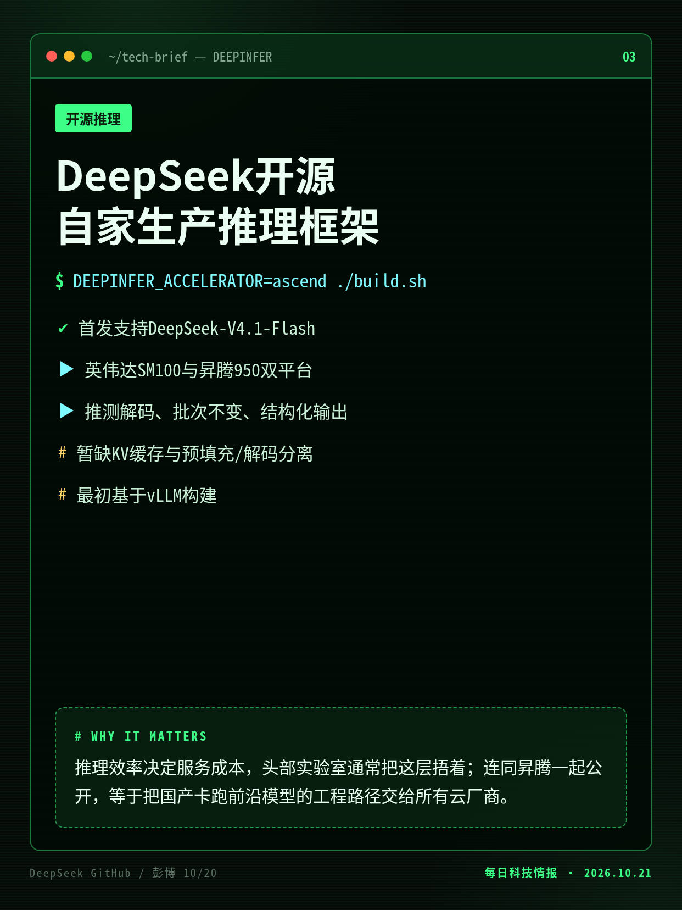
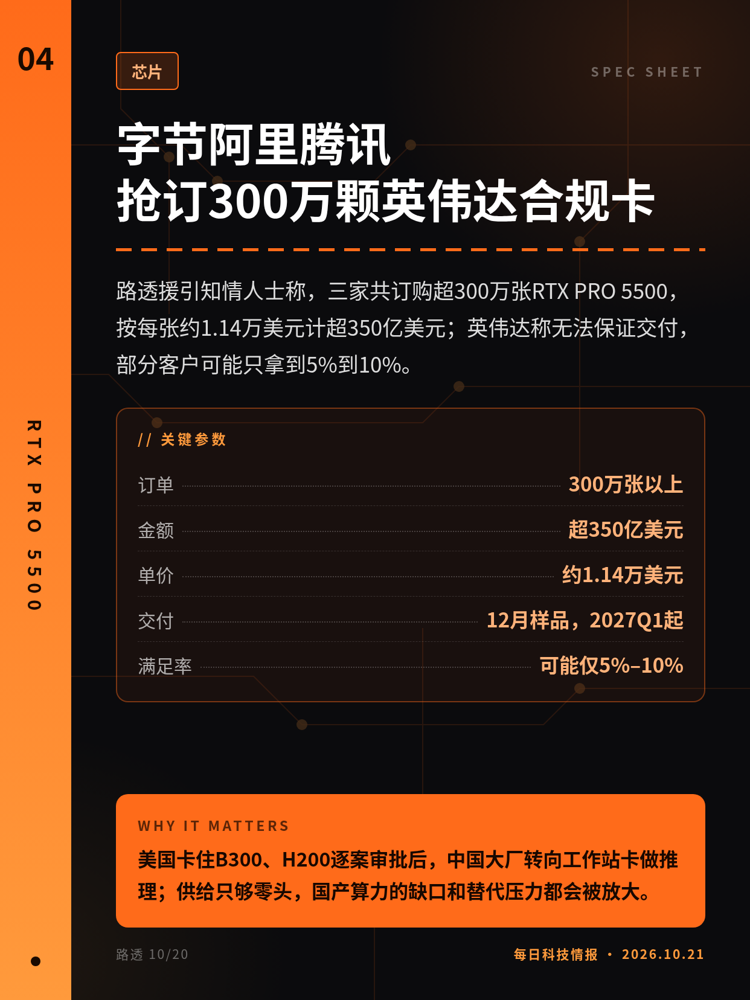
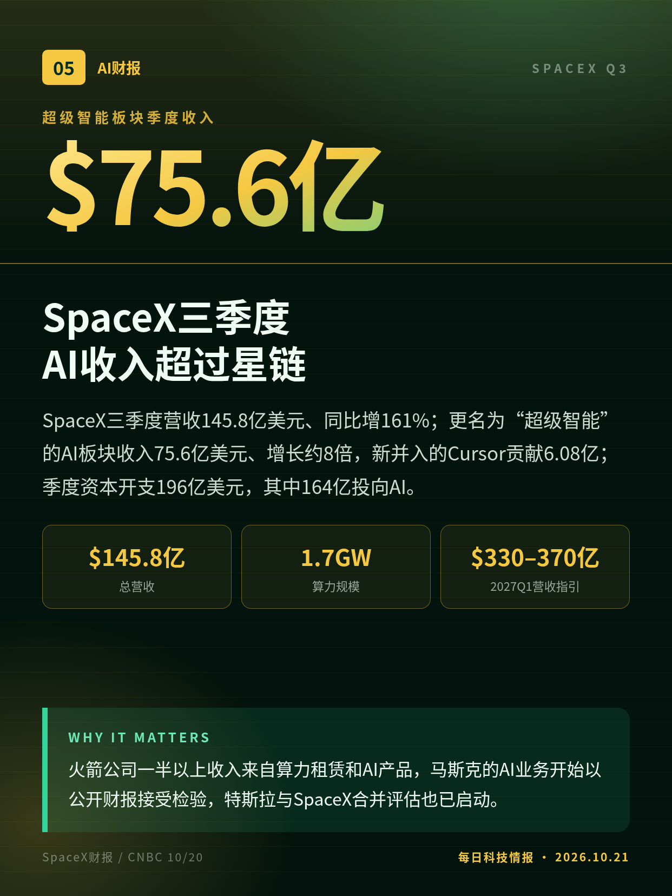
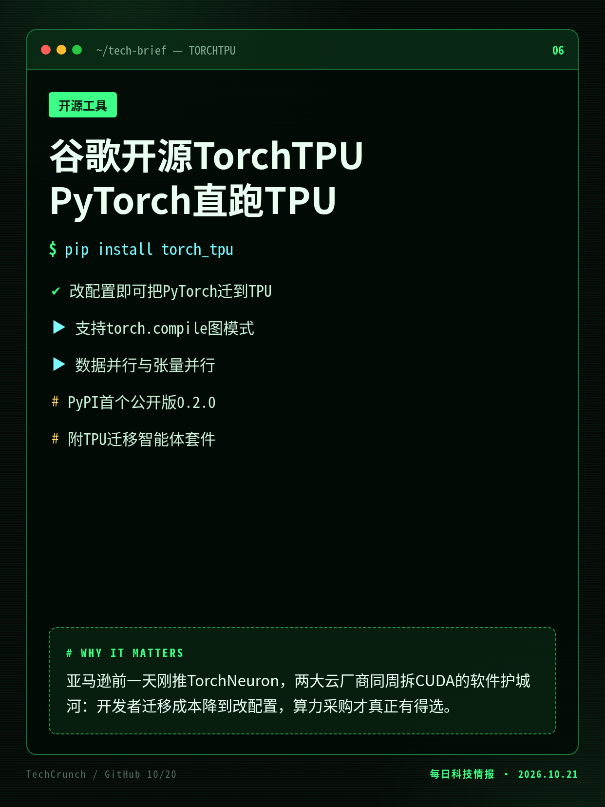
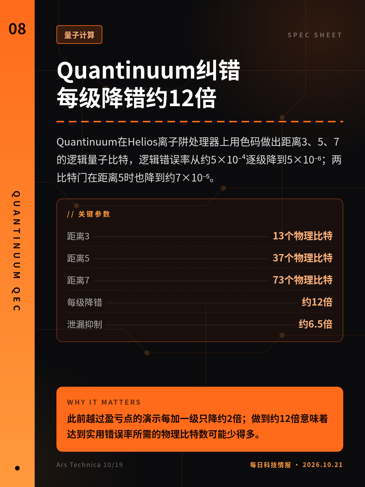
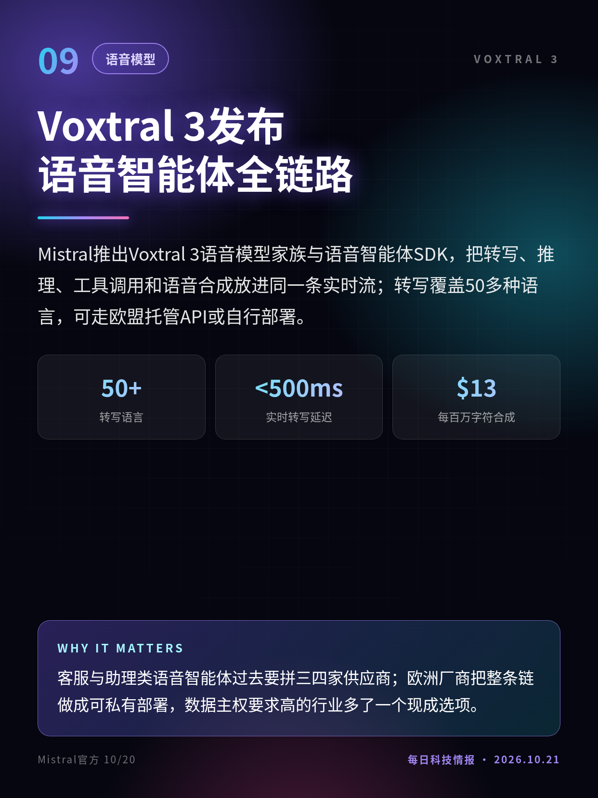
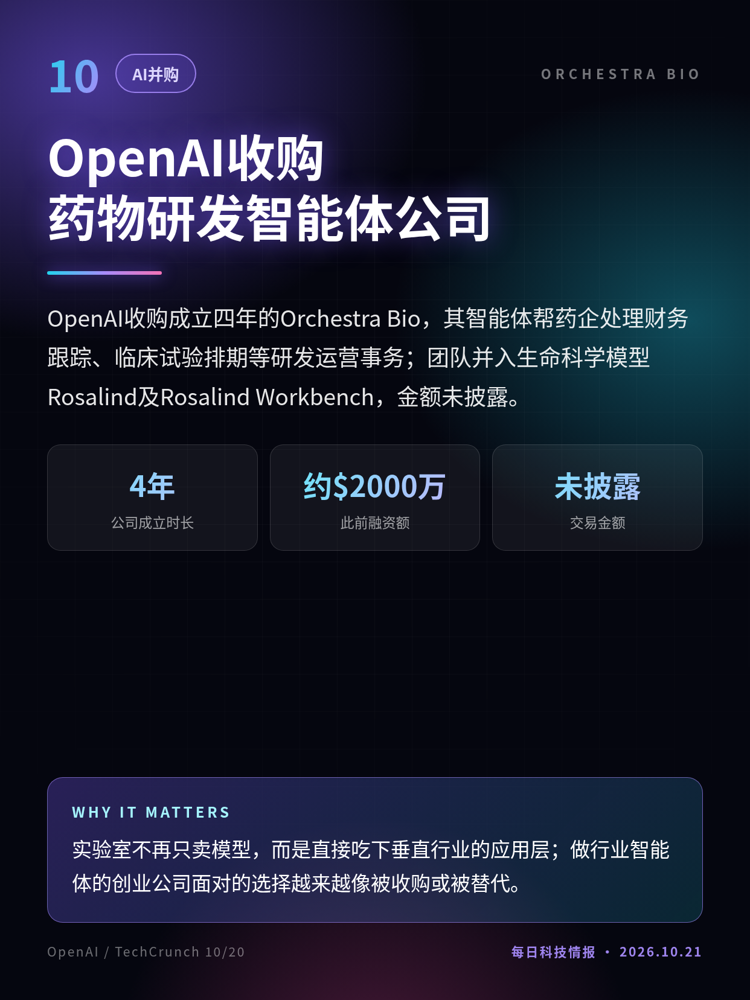
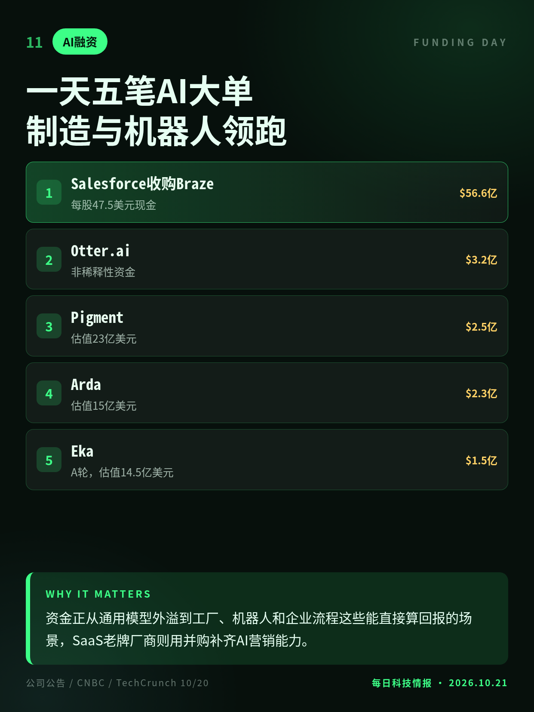

2026.10.21 · 周三 · 过去 48 小时
今日科技情报
共 11 条，按重要性排序。点标题直接跳过去。
共 11 条，按重要性排序。点标题直接跳过去。

华尔街日报看到的IPO招股书草案显示，Anthropic上半年营收163亿美元，上年同期11亿；净亏损807亿美元，其中约720亿来自可转债等融资工具的会计重估；约两成收入来自两家客户。
头部模型公司的账本第一次摊开：收入增长快过算力开支，但数千亿美元大多不可撤销的算力合同，把云厂商和芯片商一起绑进了这次IPO。
印度CA eMudhra的8张中间证书私钥生成有缺陷，熵只有3到8位，任何人都能从证书反推私钥、为任意网站签发可信证书。浏览器自10/17起拦截，苹果10/19跟进，10/20公开。
浏览器已修好，但不读吊销信息的Linux发行版、容器、物联网设备和自带根证书的工具要逐个更新，Go维护者称清理规模将超过心脏出血。

DeepSeek开源线上服务所用推理框架DeepInfer，首发支持V4.1-Flash，兼容英伟达SM100与华为昇腾950；同步开源deepseek-recipe对齐官方API。
推理效率决定服务成本，头部实验室通常把这层捂着；连同昇腾一起公开，等于把国产卡跑前沿模型的工程路径交给所有云厂商。

路透援引知情人士称，三家共订购超300万张RTX PRO 5500，按每张约1.14万美元计超350亿美元；英伟达称无法保证交付，部分客户可能只拿到5%到10%。
美国卡住B300、H200逐案审批后，中国大厂转向工作站卡做推理；供给只够零头，国产算力的缺口和替代压力都会被放大。

SpaceX三季度营收145.8亿美元、同比增161%；更名为“超级智能”的AI板块收入75.6亿美元、增长约8倍，新并入的Cursor贡献6.08亿；季度资本开支196亿美元，其中164亿投向AI。
火箭公司一半以上收入来自算力租赁和AI产品，马斯克的AI业务开始以公开财报接受检验，特斯拉与SpaceX合并评估也已启动。

谷歌开源PyTorch的TPU原生后端TorchTPU，现有PyTorch应用改配置即可迁到TPU和谷歌云；与Meta、Hugging Face、vLLM与SGLang团队联调，并配套迁移智能体工具。
亚马逊前一天刚推TorchNeuron，两大云厂商同周拆CUDA的软件护城河：开发者迁移成本降到改配置，算力采购才真正有得选。
OpenAI新评测：20种语言从零写兼容SQLite的数据库，GPT-6 Astra平均通过率87.4%；把COBOL迁到Java、Rust等，GPT-6.1 Sol准确率最高97.9%。
银行、ATM和气象系统大量依赖COBOL与Fortran，原作者早已离场；迁移准确率接近饱和，存量系统改造的人力账要重算。

Quantinuum在Helios离子阱处理器上用色码做出距离3、5、7的逻辑量子比特，逻辑错误率从约5×10⁻⁴逐级降到5×10⁻⁶；两比特门在距离5时也降到约7×10⁻⁵。
此前越过盈亏点的演示每加一级只降约2倍；做到约12倍意味着达到实用错误率所需的物理比特数可能少得多。

Mistral推出Voxtral 3语音模型家族与语音智能体SDK，把转写、推理、工具调用和语音合成放进同一条实时流；转写覆盖50多种语言，可走欧盟托管API或自行部署。
客服与助理类语音智能体过去要拼三四家供应商；欧洲厂商把整条链做成可私有部署，数据主权要求高的行业多了一个现成选项。

OpenAI收购成立四年的Orchestra Bio，其智能体帮药企处理财务跟踪、临床试验排期等研发运营事务；团队并入生命科学模型Rosalind及Rosalind Workbench，金额未披露。
实验室不再只卖模型，而是直接吃下垂直行业的应用层；做行业智能体的创业公司面对的选择越来越像被收购或被替代。

10/20多家AI公司公布融资或并购：前OpenAI研究主管创办的制造智能体Arda估值15亿美元，机器人公司Eka估值14.5亿；Salesforce以约56.6亿美元收购营销平台Braze。
资金正从通用模型外溢到工厂、机器人和企业流程这些能直接算回报的场景，SaaS老牌厂商则用并购补齐AI营销能力。
数据来自媒体所见招股书草案，Anthropic未回应，正式文件公开后数字可能调整。
路透匿名信源，三家公司未回应，英伟达未证实具体订单数量。
切换深浅两套图时，下载按钮会跟着当前这套走。黄标条目在新闻稿或官方口径出现前，请勿写成已交割或已定日期。上一期专区：2026-10-20。